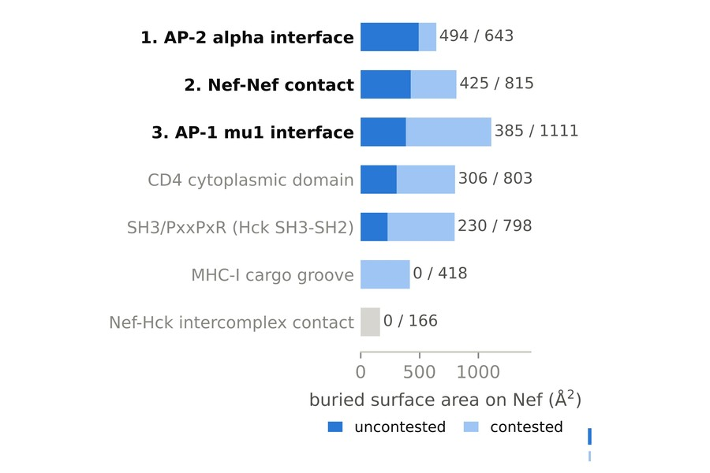
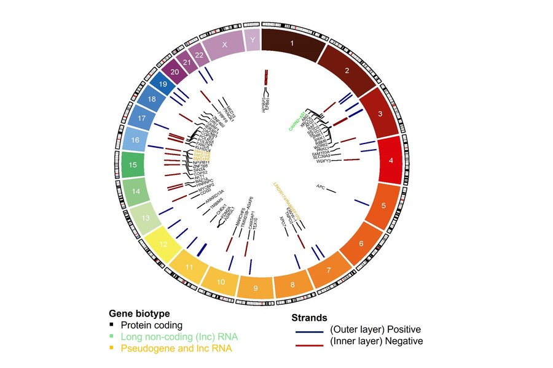
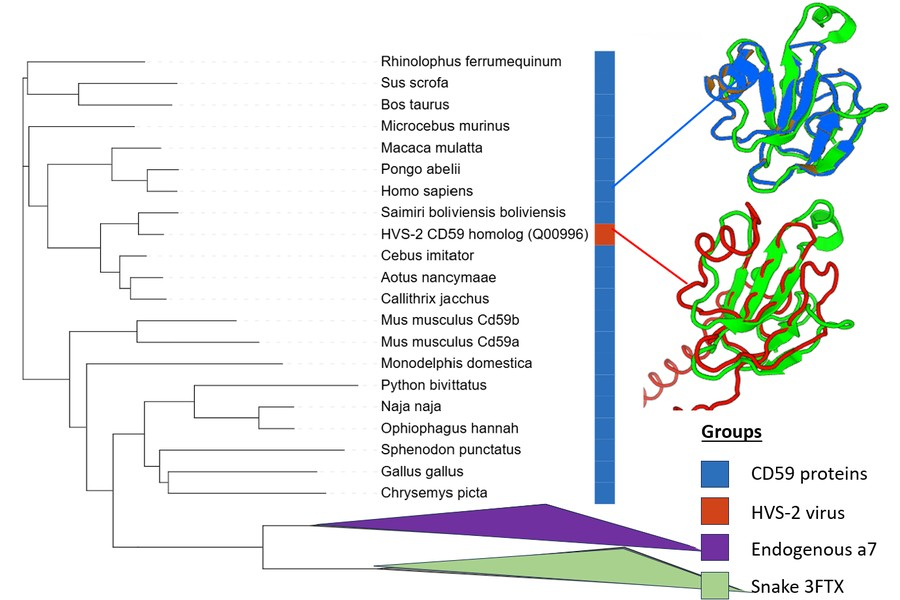
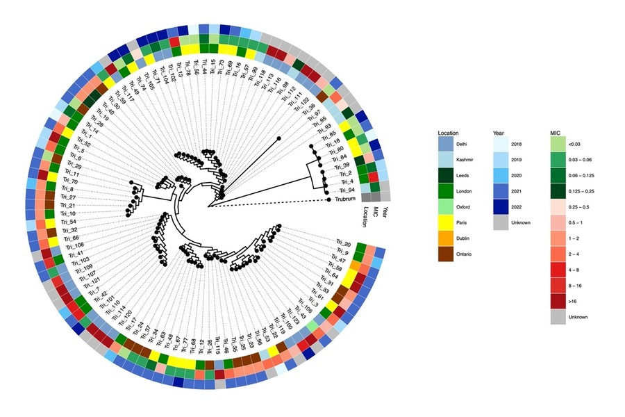

I am a PhD candidate in the Goffinet Lab at the Liverpool School of Tropical Medicine, working at the intersection of structural bioinformatics, functional genomics and experimental virology.
My research combines computational and experimental approaches to investigate viral–host interactions and understand the molecular mechanisms underlying viral persistence. I develop analytical pipelines for functional genomics data, including bulk and single-cell RNA-seq, ATAC-seq and DNA-seq from cell lines and human PBMCs. My work also incorporates structural bioinformatics to explore protein structure, function and interactions. Working closely with experimental virologists, I aim to connect computational predictions with biological evidence and experimental validation.
My current research focuses on HIV-1 latency, particularly the mechanisms that allow reactivated infected cells to evade immune clearance, and on the design of proteins targeting the viral factor involved.

Mapping every Nef–host interface in the deposited structures to determine which surfaces a designed binder could engage without competing with the host proteins already using them, and whether those surfaces can present Nef to a ubiquitin ligase for degradation.

Transcriptomic, epigenomic and genomic analysis of latency models and patient PBMCs, combining bulk and single-cell RNA-seq, ATAC-seq and proviral integration site mapping to describe what latency reversal does to a cell beyond switching transcription back on. This project also includes the work that established Nef as a major antagonist of immune-mediated killing after reactivation.

Built a structure-based phylogenetics pipeline with FoldTree, Foldseek and OMA to resolve relationships across a superfamily where near-zero sequence identity defeats sequence-based methods, and tested whether a herpesviral surface glycoprotein is a functional toxin mimic or a captured host protein. I initiated this collaboration and secured the funding for the visit.

Whole-genome analysis of over 100 isolates to reconstruct the transmission of an emerging drug-resistant dermatophyte across several countries.
Asks whether viral surface glycoproteins carry regions that mimic snake three-finger toxins, and whether venom scaffolds could therefore be engineered into entry inhibitors. A whole-fold structural search with α-bungarotoxin as query returned a single significant hit — a squirrel-monkey herpesvirus glycoprotein annotated as a CD59 homologue — but structural phylogenetics across a 48-structure set placed it firmly inside the CD59 clade, with no drift toward the toxins. Whole-fold search finds relatives, not mimics.